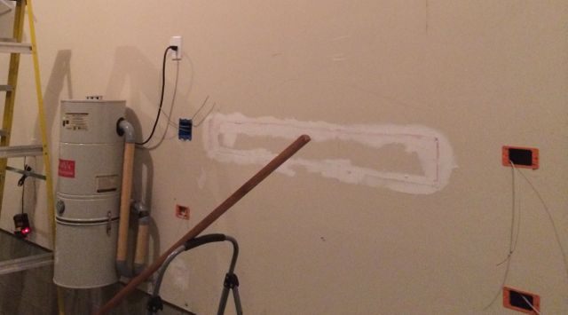
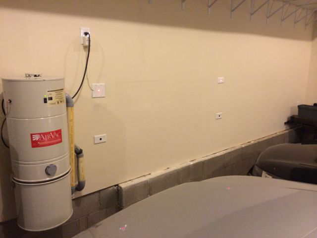

Welcome to GitHub Pages.
Let's face it, garages are simply never big enough. There is always more you want to put into a garage than will fit and once you park your cars, things get tighter still. To get the most out of this space, your car needs to be parked correctly everytime. That is what this little device seeks to do. This is the second generation of device I have used and I learned some things from my first go-round. Before I share the current design, let me give a few lessons learned from the first:
- Sensor - I started with the inexpensive SR-501 ultrasonic sensor I buoght from China for $5. This was a mistake as these cheap sensors did not have adequate range and could not deal with the changing cross-section of the car as it approached the sensor.
- Power - I thought about using once of those USB charger wall-warts to supply 5V to the circuit. Turns out that there is a difference between a charging device an a regulated power source - who knew!
- Board - My first attempt was to solder the circuit to a breadboard-like perf board. This was a real pain and it added to the size of the board.
- Placement - I wanted this sensor to be "in" the wall to make the installation neat. Unfortunately, the walls in the garage did not allow for the sensor to be placed at the ideal bumper height. You may want to check what is inside the walls before you commit to the project.
You can download the sketch I used to drive the parking sensor using the buttons above. Then, use these commands to create your own fork. If you're using the GitHub for Mac, simply sync your repository and you'll see the new branch.
$ cd your_repo_root/repo_name
$ git fetch origin
$ git checkout gh-pages
Bill of materials and approximate costs ~$100
I wanted this project to be something that would last, looked professional and functioned reliably. You could save a lot of time and some cost be mounting your sensor "on" rather than "in" the walls but here is the bill of materials for the approach I took. You may have more luck with the cheap SR-501 sensors which would save a fair bit of money.
Mounting hardware - $10:
- One - Double outlet box - old construction - $2
- Three - Single outlet boxes - old construction - $3
- One blank double box plate - $1
- Three blank single box plates - $1.50
- Paint, spacking, sandpaper assuming you have some laying around the house- ~$3
Circuit Board - $10 for three
I have designed a board for this project which I share on OSHPark under my username. The EAGLE and GERBER files are also stored here.

Electronics - $66
- Arduino Pro Mini - 5V / 8 Mhz - $10
- 40 Pin Header strip - $1.50
- Six 330 ohm resistors - $1.50
- One diode (I used a standard 4107 but schottkey may be more efficicent $0.25
- Two potentiometers (optional) for quick adjustment - $3
- Two Maxbotix LV-MaxSonar - EZ0 sensors - $50
Power Supply - RadioShack 9V 500mA Wall Wart - $10
Cabling - $5
- One 3" Four conductor female - female ribbon cable - $0.25
- One 8' Four conductor female - female cable (custom made) - $1.00
- One 3' Six conductor cable with 6 pin female to 7 pin female (one blank slot) - $1.50
- One 10' Six conductor cable with 6 pin female to 7 pin female (one blank slot) - $2.00
Installation
I wont bore you with the obvioud details but here is a rough outline of the work to be done. I selected a site which had a nearby outlet and placed the double box and a single box at a heigh of about six feet centered on each parking space. I then placed two single boxes below the first two and tried to get them as close to car bumper height as the garage wall would allow. I had to open up the wall in between the left and right boxes so I could snake the wire across. If you are skilled in fishing wires across 2-3 studs without doing this then you can save a lot of time.
{kind=link}
Once I had the boxes in place, I created the custom cables using a Pololu crimper making sure to skip one spot on the sensor end of the wire so the PW pin was unconnected and the BW pin was held high. This enabled the two sensors to be "chained" where one sensor pings and then signals the next to ping thereby avoiding interferrence between the sensors. The ability for these sensors to perform this chaining and the analog output of the sensor made for a much cleaner sketch without the need for any libraries.
With everything connected, I programmed the board with the sketch provided here. The only items you may need to tweak are the Max, Mid and MinDistance variables. You can also put the potentiometers on the board and make manual adjustments to the MinDistance just un-comment that code in the void setup() section.
{kind=link}
lease feel free to look at the code, board design and my approach to the project and suggest improvements. I hope this project is helpful and I may come back to it based on your feedback. I can also imagine some potential improvements going forward such as - networking the sensor to report status and trigger events, temperature correction (currently done only on power-on, and power saving steps.